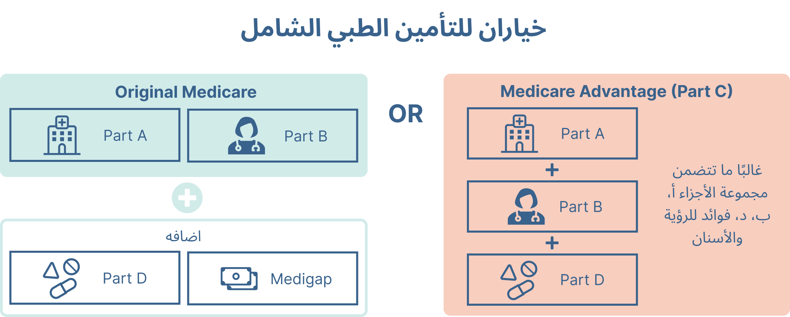

برنامج Medicare هو برنامج تأمين صحي فيدرالي أمريكي للأشخاص الذين تبلغ أعمارهم 65 عامًا أو أكبر.
يتلقى أكثر من نصف الأمريكيين تأمينهم الصحي من خلال صاحب العمل؛ ومع ذلك، يتوقف العديد من أصحاب العمل عن تقديم هذه المزايا بعد تقاعد موظفيهم.ولهذا السبب يلتحق العديد من المتقاعدين في برنامج Medicare بمجرد أن يصبحوا مؤهلين - حتى يتمكنوا من الاستمرار في تلقي تأمين الرعاية الصحية بأسعار معقولة عندما يتوقفون عن العمل.
Medicare is a US federal health insurance program for people age 65 or older.
Over half of Americans receive their health insurance through their employer; however, many employers stop offering these benefits after their employees retire.This is why many retirees enroll in Medicare once they become eligible – so they can continue receiving affordable healthcare insurance when they stop working.
يتكون برنامج Medicare من 4 أجزاء رئيسية — الجزء A وB وC وD — ويغطي كل جزء مجموعة مختلفة من خدمات الرعاية الصحية. من المهم فهم الأجزاء المختلفة حتى تتمكن من اختيار خطة تغطي ما تحتاجه وتجنب التكاليف غير المتوقعة.
What are the parts of Medicare?
Medicare has 4 main parts — Part A, B, C, and D — and each part covers a different set of healthcare services. It’s important to understand the different parts so you can pick a plan that covers what you need and avoid unexpected costs.
الجزء أ (تأمين المستشفى): يساعد في تغطية رعاية المرضى الداخليين مثل رعاية المستشفى، ومرافق التمريض الماهرة، ورعاية المسنين، وبعض الرعاية الصحية المنزلية. هذا الجزء عادةً ما يكون مجانيًا ولا يتطلب قسطًا شهريًا.。
Part A (hospital insurance): Helps cover inpatient care such as hospital care, skilled nursing facilities, hospice care, and some home health care. This part is usually free and does not require a monthly premium.
الجزء ب (التأمين الطبي): يساعد في تغطية رعاية المرضى الخارجيين والمعدات الطبية المعمرة وبعض الرعاية الصحية المنزلية. يتطلب هذا الجزء قسطًا شهريًا ويجب عليك التسجيل عندما تصبح مؤهلاً لأول مرة - وإلا فقد تتلقى عقوبة التسجيل المتأخر.
Part B (medical insurance): Helps cover outpatient care, durable medical equipment and some home health care. This part requires a monthly premium and you must enroll when you first become eligible – otherwise you may receive a late enrollment penalty.
إن الجزء A والجزء B من برنامج Medicare يخضعان لبرنامج Medicare الأصلي ويتم تقديمهما من قبل الحكومة الفيدرالية. على الرغم من أن برنامج Medicare الأصلي يغطي مجموعة واسعة من خدمات الرعاية الصحية، إلا أنه لا يغطي جميع النفقات الطبية. ولهذا السبب يقوم العديد من الأشخاص بشراء خطط تأمين إضافية لتكملة برنامج Medicare الأصلي.
Medicare Part A and Part B are under Original Medicare and are offered by the federal government. Though Original Medicare covers a wide range of healthcare services, it does not cover all medical expenses. This is why many people purchase additional insurance plans to supplement Original Medicare.
الجزء د (خطة الأدوية): يساعد على تغطية تكلفة الأدوية الموصوفة. يمكنك إما شراء خطة أدوية Medicare منفصلة من شركة خاصة لإضافتها إلى تغطية Medicare الأصلية، أو يمكنك اختيار خطة Medicare Advantage Plan التي تتضمن بالفعل تغطية دوائية. كما هو الحال في الجزء ب، قد تتلقى عقوبة التسجيل المتأخر إذا لم يكن لديك خطة للأدوية.
Part D (drug plan): Helps cover the cost of prescription drugs. You can either buy a separate Medicare drug plan from a private company to add to your Original Medicare coverage, or you can choose a Medicare Advantage Plan that already has drug coverage included. Similar to Part B, you may receive a late enrollment penalty if you do not have a drug plan.
التأمين التكميلي لبرنامج Medicare (MediGap): تأمين إضافي يمكنك شراؤه من شركة خاصة يساعدك في دفع حصتك من تكاليف برنامج Medicare الأصلي.
Medicare Supplemental Insurance (MediGap): Extra insurance you can buy from a private company that helps pay your share of costs in Original Medicare.
أخيرًا، يختار العديد من الأشخاص تجميع الخطط المذكورة أعلاه واختيار خطة Medicare Part C، والمعروفة أيضًا باسم Medicare Advantage.
Finally, many people choose to bundle the plans above and select a Medicare Part C plan, also known as Medicare Advantage.
الجزء ج (ميزة Medicare): خطط معتمدة من الحكومة من شركة خاصة تقدم بديلاً لبرنامج Medicare الأصلي. تتضمن هذه الخطط "المجمعة" الجزء أ والجزء ب وعادةً الجزء د. وقد تقدم أيضًا مزايا إضافية لا يغطيها برنامج Medicare الأصلي - مثل خدمات الرؤية والسمع وطب الأسنان.
Part C (Medicare Advantage): Government-approved plans from a private company that offer an alternative to Original Medicare. These “bundled” plans include Part A, Part B, and usually Part D. They may also offer extra benefits that Original Medicare doesn’t cover — like vision, hearing, and dental services.

Introduction مقدمة
What is Medicare? ما هو الرعاية الطبية؟
What plans can I choose? ما هي الخطط التي يمكنني اختيارها؟